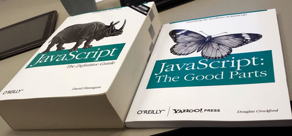

Markus Palviainen

Netscape loi kielen 1996 tehdäkseen HTML-sivuista dynaamisempia
Brendan Eich loi ensimmäisen version vain 10 päivässä
Nimi alunperin LiveScript, mutta sai nykyisen nimensä Javan suosion myötä
Alkuperäisenä tavoitteena oli tehdä aloittelijaystävällinen kieli
Alussa kielellä maine lähinnä käyttäjää ärsyttävien käyttöliittymän interaktioiden luomisessa.
Kielen vakavoituminen, kun käyttöliittymälogiikka siirtyi verkkosovelluksissa vahvasti selaimeen Single Page Application -frameworkien myötä, kuten BackboneJs tai AngularJs. Toinen vakavoittava tekijä NodeJs.
Dynaamisesti tyypitetty kieli
Hybridikieli, jonka syntaksi muistuttaa C:tä
Funktionaalinen kieli. Funktiot statuksella "first-class citizen"
Oliokieli, jossa prototyyppipohjainen perintämalli
Kielen versioiden pohjalla EcmaScript (ES) -standardit
1996: Ensimmäinen versio
2009: ES5
2015: ES6, ES2015
2016: ES7, ES2016
Tulevaisuus: ES proposals
Javascriptin päälle rakennettu joukko kieliä, jotka kääntyvät puhtaaksi Javascriptiksi
CoffeeScript, ClojureScript, Dart, TypeScript, JSX, Elm, ...
https://github.com/jashkenas/coffeescript/wiki/list-of-languages-that-compile-to-js
Chromen V8 Enginen pohjalta rakennettu "serveriversio" Javascriptistä
Sovelluskehitys pohjautuu vahvasti eventtipohjaiseen, asynkroniseen ajattelumalliin
Suosittu nykyään erityisesti verkkosovellusten pohjalla
Selain-Javascriptistä poiketen, Nodessa on alusta asti ollut tuki moduuleille, eikä kaikki ole samassa globaalissa nimiavaruudessa
NPM -pakettienhallinta moduuleiden jakamiselle ja asentamiselle
Mukailee EcmaScript-standardeja yhtä selkeästi kuin eri selaimetkin
Uusin versio 6.x.x. Versiosta 4 alkaen tuetaan useita ES2015 -ominaisuuksia, joten suositeltavaa käyttää vähintään nelosella alkavaa versiota
AWS:n Lambdat tukevat nykyään versiota 4.3
Sovellusten käynnistäminen yksinkertaisimmillaan node app.js, jossa app.js päätiedosto
Uusi sovellus kannattaa alustaa npm init -komennolla
Interactive shell - ajamalla pelkästään node
Lokaalia node-moduulia vastaa käytännössä yksi js-tiedosto
Oletuksena moduuli pysyy omassa nimiavaruudessaan. Moduulin ulkoinen rajapinta module.exports avulla
Nykyisellään ei vielä tueta ES:n import/export -avainsanoja
Lokaalin moduulin latauksessa polkumääritys
// exampleModule.js
const installedModule = require('installedModule');
const privateVar = 5;
const publicVar = 10;
function revealPrivateVar() {
return privateVar;
}
module.exports = {
publicVar: publicVar,
revealPrivateVar: revealPrivateVar
};
// app.js
const exampleModule = require('./exampleModule');
exampleModule.revealPrivateVar() !== exampleModule.publicVar;
Npm:n kautta haetut kirjastot kommennolla npm install randomLibrary --save
Ladataan node_modules/ -hakemiston alle. --save vie ne myös package.json-tiedostoon
Tuotantoasennukseen kuulumattomat --save-dev flagilla, tällaisia mm. yksikkötestauksen kirjastot. Tuotantoasennus npm install --production
Sovelluksen perustiedot ja asennettavien npm-moduulien versiot
npm start = Dokumentaatio, kuinka sovellus käynnistetään
npm test = Dokumentaatio, kuinka testit ajetaan
dependencies = --save flagilla tallennetut npm-paketit
devDependencies = --save-dev flagilla tallennetut npm-paketit
1.2.3 = 1.2.3
~1.2.3 = Kaikki 1.2.x versiot
^1.2.3 = Kaikki 1.x.x versiot
Jos haluaa pelata varman päälle, niin kannattaa suosia eksakteja versionumeroita
Perustuu pitkälti AirBnb:n tyylioppaaseen https://github.com/airbnb/javascript
Muuttujien ja vakioiden esittelyille kolme eri avainsanaa: const, let ja var
const oletuksena. let jos arvo muuttuu
var ainoastaan ES5 tai vanhemmissa versioissa, koska scope määräytyy funktion mukaan, eikä lohkon mukaan
Alustamattomat muuttujat listan viimeiseksi
const factor = 5;
let result = 0;
let calculator;
calculator = generateCalculator();
numbers.forEach((number) => result += factor*calculator(i));
function calculator(c) {
var a = 5;
if (c > 3) {
var b = 3;
}
console.log(b);
return a + b + c; // works always in Javascript!
}
Javascriptissä vain yksi tyyppi numeerisille arvoille
Numeerisen arvon ja merkkijonon summaus tuottaa merkkijonon. Numeerisen arvon ja merkkijonosta poikkeavan tietotyypin summaaminen tuottaa... jotain satunnaista
const stringValue = '10';
const parsedValue1 = parseInt(stringValue, 10);
const parsedValue2 = _.parseInt(stringValue);
Merkkijonojen dynaamisessa muodostamisessa kannattaa käyttää ES6 uutta template strings -ominaisuutta
const name = 'Donald';
const emailTemplate = `Hello ${name}!`;
ES5 -versiossa util.format käyttökelpoinen vastine templateille
util.format('%s:%s', 'foo', 'bar');
Objektien ja listojen muuttujien arvot viittauksia
Kentän poistaminen delete -operaattorilla
const a = {foo: 'bar'};
const b = a;
a.foo = 'foobar';
a.foo === b.foo;
delete a.foo;
Käytä vertailuissa triplaoperaattoria tuplaoperaattorien sijaan
const a = 5;
const b = 5;
const c = '5';
a === b;
b !== c;
b == c;
"Truthy" vertailu yleinen tapa Javascriptissä. false, 0, "", null, undefined, and NaN kääntyvät false -arvoon, muutoin true.
const value = 5;
if (value) {
console.log('Value is truthy');
}
ES5:stä eteenpäin toimiva ominaisuus, jolla voidaan estää mm. globaalien muuttujien käyttö
Suositeltavaa laittaa tiedoston alkuun, muutoin esim. let-muuttujat eivät toimi
Vaihtoehtoisesti voidaan viedä komentorivin kautta: node --use_strict
https://developer.mozilla.org/en-US/docs/Web/JavaScript/Reference/Strict_mode
'use strict';
const foo = 5;
const bar = '5';
...
ES6 toi kokoelmiin joukon funktionaalisen ohjelmoinnin perusfunktioita (kokoelmiin)
Suositeltavaa käyttää näitä funktioita for-luupin sijaan
Lodash https://lodash.com/ paikkaa puuttuvia funktioita ja tuo joukon hyödyllisiä apufunktioita.
const numbers = [1, 2, 3, 4, 5];
const sum = numbers.reduce((total, num) => total + num, 0);
const doubles = numbers.map((num) => 2*num);
doubles.forEach(num => console.log(num));
const _ = require('lodash');
const numbers = [1, 2, 3, 4, 5];
let foo;
const sum = _.reduce(numbers, (total, num) => total + num, 0);
const doubles = _.map(numbers, (num) => 2*num);
_.forEach(doubles, num => console.log(num));
if (_.isUndefined(foo)) {
console.log('Foo is not defined');
}
Kannattaa käyttää momentJs:ää (http://momentjs.com/) vähänkin monimutkaisempaan käsittelyyn.
const moment = require('moment');
const currentDate = moment();
moment().format('MMMM Do YYYY, h:mm:ss a');
moment().add(10, 'days');
moment("2010 13", "YYYY MM").isValid(); // false
const parsed = moment("12-25-1995", "MM-DD-YYYY");
const parsedDate = parsed.toDate();
ES6:sta eteenpäin suositeltua käyttää class -avainsanaa luokan luonnissa
Metodit palauttamaan itsensä this-avainsanan avulla, jotta niitä voi ketjuttaa
Luokat isolla ja instassit pienellä alkukirjaimella tunnistamisen helpottamiseksi
class Person {
constructor(options) {
options = options || {};
this.name = options.name || 'no name';
this.age = options.age || 0;
}
getName() {
return this.name;
}
setName(name) {
this.name = name;
return this;
}
setAge(age) {
this.age = age;
return this;
}
}
const president = new Person();
president.setName('Donald Thumb').setAge(70);
var Person = function(options) {
options = options || {};
this.name = options.name || 'no name';
this.age = options.age || 0;
}
Person.prototype.getName = function() {
return this.name;
}
Person.prototype.setName = function(name) {
this.name = name;
return this;
}
Person.prototype.setAge = function(age) {
this.age = age;
return this;
}
var president = new Person({name: "Default name"});
president.setName('Donald Thumb').setAge(70);
Javascriptissä hieman ongelmallinen. Määräytyy mm. funktio-scopen mukaan
Kannattaa käyttää nuolifunktioita aina kun mahdollista callbackeissa, koska sen avulla this-konteksti menee oikein.
const calculator = {
factor: 5,
multiply: function(numbers) {
return numbers.map((num) => {
return this.factor*num;
});
}
};
ES5 tai vanhemmissa kierretään apumuuttujan tai bind-funktion avulla.
var calculator = {
factor: 5,
multiply: function(numbers) {
var _this = this;
return _.map(numbers, function(num) {
return _this.factor*num;
});
}
};
var calculator = {
factor: 5,
multiply: function(numbers) {
var multiplierFunction = function(num) {
return this.factor*num;
};
return _.map(numbers, multiplierFunction.bind(this));
}
};
Noden asynkroninen malli callbackien avulla johtaa aika nopeasti sekavaan ja epäluettavaan koodiin.
Promiset yleisesti hyväksytty suunnittelumalli tähän ongelmaan
Promisen tuki tällä hetkellä vaihteleva
Promisiontikirjastot, kuten BluebirdJs
Normaali asynkroninen tapa:
fs.readFile("file.json", function (err, val) {
if (err) {
console.error("unable to read file");
}
else {
try {
val = JSON.parse(val);
console.log(val.success);
}
catch (e) {
console.error("invalid json in file");
}
}
});
Promise -tyylinen tapa:
fs.readFileAsync("file.json").then(JSON.parse).then(function (val) {
console.log(val.success);
})
.catch(SyntaxError, function (e) {
console.error("invalid json in file");
})
.catch(function (e) {
console.error("unable to read file");
});
Ehkä tunnetuin yksikkötestaus-framework Nodelle. Kirjasto itsessään varsin pieni ja sisältää vain raamit testaukselle. Tuunataan oheiskirjastoilla
Asennus kannattaa tehdä globaalina: npm install -g
Käyttö (test -alihakemistoon): mocha test -w
Testien kirjoittaminen yleensä hankalampaa jälkikäteen, siksi kannattaa suosia TDD-tyyliä
Testit hyvä tapa dokumentoida moduulin/funktion toiminnallisuuksia
Bugien korjaus testien avulla
Jos testitapausten haaroja alkaa olla liikaa, tai moduuli on vaikea testata, niin merkki siitä että moduulia kannattaa pilkkoa pienempiin osiin
Syntaksi noudattelee BDD-tyyliä
describe = Testitapaus, jos sisäkkäin niin yleensä tarkennetaan testitapausta
it = Väittämä, eli varsinainen testin sisältö
beforeEach, afterEach = Alustukset ja siivoukset jotka suoritetaan ennen jokaista testiä, tai jokaisen testin jälkeen
Suositellaan nuolifunktioiden välttämistä, koska se sotkee this -kontekstin
describe('When json is parsed', function() {
beforeEach(function() {
// ...
});
it('should get the product id', function() {
// ...
});
describe('and id is not given', function() {
beforeEach(function() {
// ...
});
it('should return null', function() {
// ...
});
});
afterEach(function() {
// ...
});
});
Kirjasto erilaisille assert-funktioille
const expect = chai.expect;
const foo = 'bar';
const person = {
name: 'Donald',
age: 70
};
expect(foo).to.be.a('string');
expect(foo).to.equal('bar');
expect(foo).to.have.length(3);
expect(person).to.have.property('name')
.with.length(6);
expect(person).to.deep.equals({name: 'Donald', age: 70});
Kirjasto komponenttien feikkaamiseen.
Spy = Tutkitaan, onko jotain funktiota kutsuttu (n kertaa)
const callback = sinon.spy();
const proxy = once(callback);
proxy();
assert(callback.calledOnce);
Stub = Feikataan funktio palauttamaan tietty arvo
const parser = sinon.stub();
parser.withArgs('foo.bar.12').returns(12);
expect(parser('foo.bar.12')).to.equal(12);
Näppärä kirjasto komponenttien feikkaamiseen node-moduulin sisällä - Monkey Patching
Voidaan ylikirjoittaa muuttujia, jotka on määritelty moduulin päätasolla
Rewire-kirjastoa käytettäessä joudutaan käyttämään let avainsanaa const:n asemasta!
// calculator.js
let loader = require('loader');
const numbers = loader.getNumbers();
// unit test
const rewire = require('rewire');
const calculator = rewire('./calculator');
calculator.__set__('loader', {
getNumbers: sinon.stub().returns([1, 2, 3])
});
Määritellään moduuli funktiona, jolloin requiren yhteydessä voidaan kiinnittää oheismoduuleita
function validator(parser) {
function validateAge(data) {
const age = parser.getAge(data);
return age === null ? false : age >= 0;
}
return {
validateAge: validateAge
};
}
module.exports = validator;